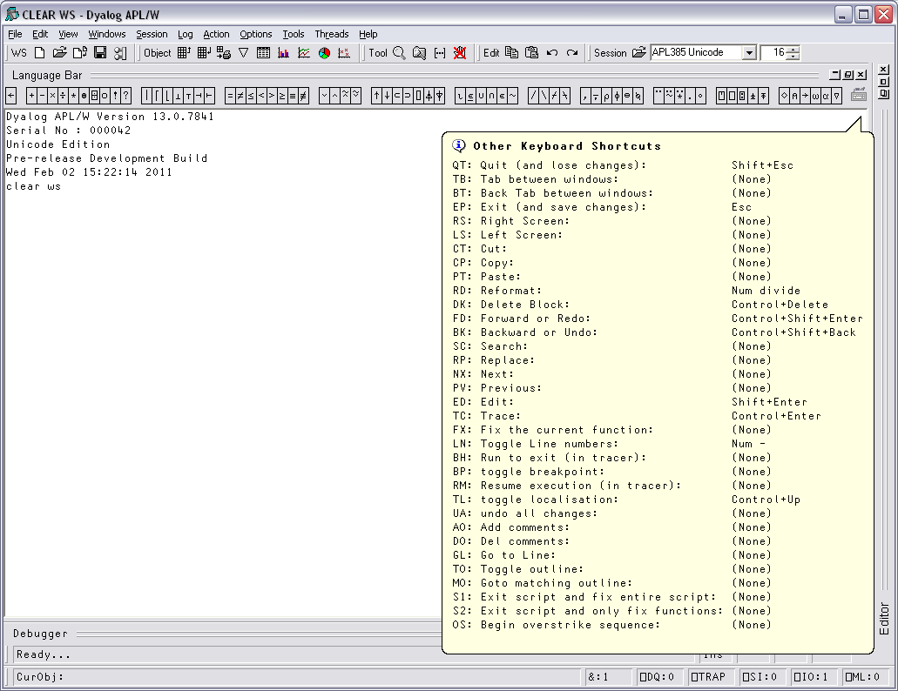

The terms keyboard shortcut (Unicode Edition) and command (Classic Edition) are used herein to describe a keystroke that generates an action, rather than one that produces a symbol.
Unicode Edition provides a number of shortcut keys that may be used to perform actions. For compatibility with Classic Edition and with previous Versions of Dyalog APL, these are identified by 2-character codes; for example the action to start the Tracer is identified by the code <TC>, and mapped to user-configurable keystrokes.
In the Unicode Edition, Keyboard Shortcuts are defined using Options/Configure/Keyboard Shortcuts and stored in the Windows Registry. Note that the Unicode IME translate tables have definitions for the Keyboard Shortcuts too; these are ignored by the interpreter, and are intended for use with terminal emulators being used in conjunction with non-GUI versions of Dyalog APL.
To the right of the last symbol in the Language Bar is the Keyboard Shortcut icon  . If you hover the mouse over this icon, a pop-up tip is displayed to remind you of your keyboard shortcuts as illustrated below.
. If you hover the mouse over this icon, a pop-up tip is displayed to remind you of your keyboard shortcuts as illustrated below.

Commands fall into four categories, namely cursor movement, selection, editing directives and special operations, and are summarised in the following tables. The input codes in the first column of the tables are the codes by which the commands are identified in the Input Translate Table.
Table 27: Cursor Movement Commands
| Input Code | Keystroke | Description |
|---|---|---|
| LS | Ctrl+PgUp | Scrolls left by a page |
| RS | Ctrl+PgDn | Scrolls right by a page |
| US | PgUp | Scrolls up by a page |
| DS | PgDn | Scrolls down by a page |
| LC | Left Arrow | Moves the cursor one character position to the left |
| RC | Right Arrow | Moves the cursor one character position to the right |
| DC | Down Arrow | Moves the cursor to the current character position on the line below the current line |
| UC | Up Arrow | Moves the cursor to the current character position on the line above the current line |
| UL | Ctrl+Home | Move the cursor to the top-left position in the window |
| DL | Ctrl+End | Moves the cursor to the bottom-right position in the window |
| RL | End | Moves the cursor to the end of the current line |
| LL | Home | Moves the cursor to the beginning of the current line |
| LW | Ctrl+Left Arrow | Moves the cursor to the beginning of the word to the left of the cursor |
| RW | Ctrl+Right Arrow | Moves the cursor to the end of the word to the right of the cursor |
| TB | Ctrl+Tab | Switches to the next session/edit/trace window |
| BT | Ctrl+Shift+Tab | Switches to the previous session/edit/trace window |
Table 28: Selection Commands
| Input Code | Keystroke | Description |
|---|---|---|
| Lc | Shift+Left Arrow | Extends the selection one character position to the left |
| Rc | Shift+Right Arrow | Extends the selection one character position to the right |
| Lw | Ctrl+Shift+Left Arrow | Extends the selection to the beginning of the word to the left of the cursor |
| Rw | Ctrl+Shift+Right Arrow | Extends the selection to the end of the word to the right of the cursor |
| Uc | Shift+Up Arrow | Extends the selection to the current character position on the line above the current line |
| Dc | Shift+Down Arrow | Extends the selection to the current character position on the line below the current line |
| Ll | Shift+Home | Extends the selection to the beginning of the current line |
| Rl | Shift+End | Extends the selection to the end of the current line |
| Ul | Ctrl+Shift+Home | Extends the selection to the beginning of the first line in the window |
| Dl | Ctrl+Shift+End | Extends the selection to the end of the last line in the window |
| Us | Shift+PgUp | Extends the selection up by a page. |
| Ds | Shift+PgDn | Extends the selection down by a page |
Table 29: Editing Directives
| Input Code | Keystroke | Description |
|---|---|---|
| DI | Delete | Deletes the selection |
| DK | Ctrl+Delete | Deletes the current line in an Edit window. Deletes selected lines in the Session Log. |
| CT | Shift+Delete | Removes the selection and copies it to the clipboard |
| CP | Ctrl+Insert | Copies the selection into the clipboard |
| FD | Ctrl+Shift+Enter | Reapplies the most recent undo operation |
| BK | Ctrl+Shift+Bksp | Performs an undo operation |
| PT | Shift+Insert | Copies the contents of the clipboard into a window at the location selected |
| OP | Ctrl+Shift+Insert | Inserts a blank line immediately after the current one (editor only) |
| HT | Tab | Indents text |
| TH | Shift+Tab | Removes indentation |
| RD | Keypad-slash | Reformats a function (editor only) |
| TL | Ctrl+Alt+L | Toggles localisation of the current name |
| GL | Ctrl+Alt+G | Go to [line] |
| AO | Ctrl+Alt+, | Add Comments |
| DO | Ctrl+Alt+. | Delete Comments |
| AC | Align Comments |
Table 30: Special Operations
| Input Code | Keystroke | Description |
|---|---|---|
| IN | Insert | Insert on/off |
| LN | Keypad-minus | Line numbers on/off |
| ER | Enter | Execute |
| ED | Shift+Enter | Edit |
| TC | Ctrl+Enter | Trace |
| EP | Esc | Exit |
| QT | Shift+Esc | Quit |